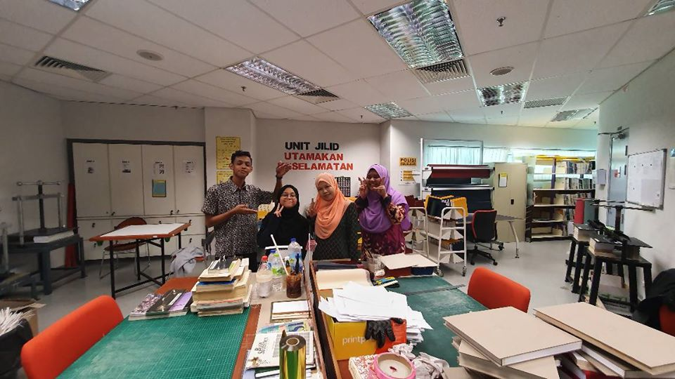
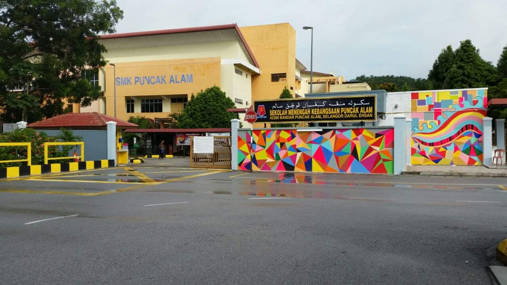
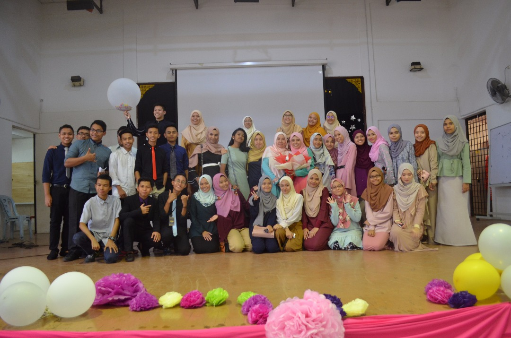
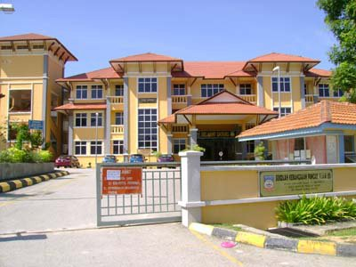

Internship @ PTAR Kampus Puncak Alam
Title description, Jan 13, 2020- Feb 21, 2020
My first proper work experience in an academic library!
I began my 6 week period industrial training on January 13 of 2020, I found the experience to be a valueble feature to my asset. I improved my communication skills and gained first hand experience what it is like to work in a library along with my two coursemates, Afif and Dayana.
Entering UiTM Kedah
Title description, Jul 4, 2018-2020


I still cannot believe I finally entered university.
Call me pessemistic but part of me actually did not expect that I would live to see the day I enter University. I was accepted to UiTM Kedah for a diploma in library management, which-let's be honest-was not everyone's first choice, in fact it was my final choice in my UPU application. Regardless, I still chose to come here and it gave me opportunities I never thought was possible.
SMK Puncak Alam
Title description, Jan 7, 2013-2017
 Time really flies every time I reminisce about my school days.
Back in secondary school I took accounting, additional mathematics, and economics. Initially I took pure science but part of me was not confident enough I would be able to take those subjects and in addition to that my parents did not encourage me to take science either hence what happened. Part of me still wonder what the outcome would be if I stayed instead.
I consider myself above average, I never really understood how I managed to be in the school's top 50 and how I scored 5A's for my SPM. My parents and teachers must have prayed for me a lot.
SK Puncak Alam
Title description, Jan 1, 2007-2012
I never really liked school around this age
Compared to secondary school, I found that I never really had the best relationships with my teachers. I often skipped school at this age but somehow I still managed to score 5As during UPSR which is practially a huge win that I'll always remember.